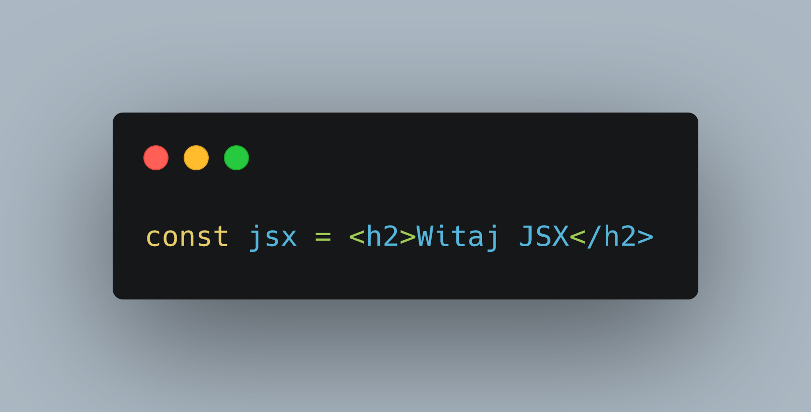
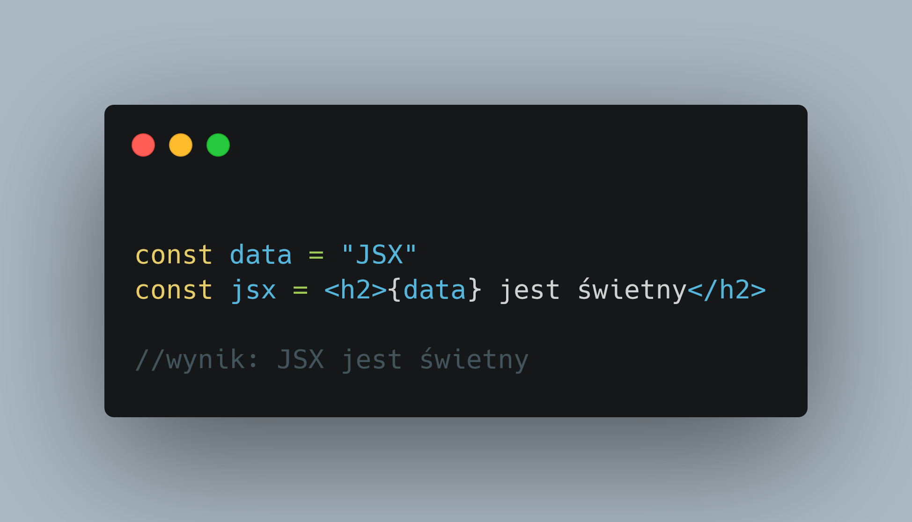
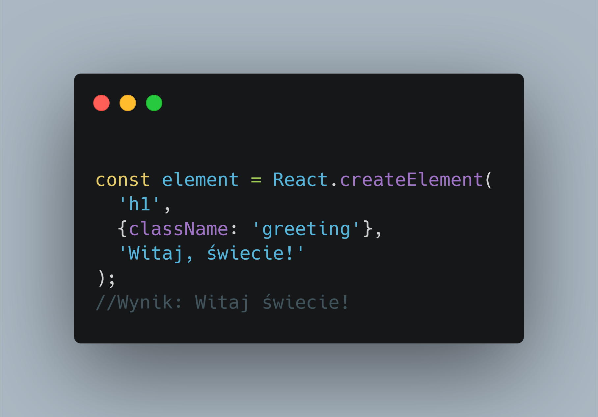

JSX - Javascriptowy XML
JSX to skrót powstały przez połączenie z dwóch nazw języków, JavaScript i XML
Tak samo jego logo
JSX to rozszerzenie dla języka Javascript pozwalająca
na wstawianie znaczników w czytelniejszy sposób
Jego składnia jest zbliżona do składni HTML

Podstawowa składnia JSX
pozwala też na wstawianie różnych wyrażeń

Twórcy reacta zalecają używanie JSX zamiast klasycznej składni reacta

Klasyczna składnia reacta
W skrócie
JSX pozwala nam na tworzenie czytelniejszego kodu Reacta